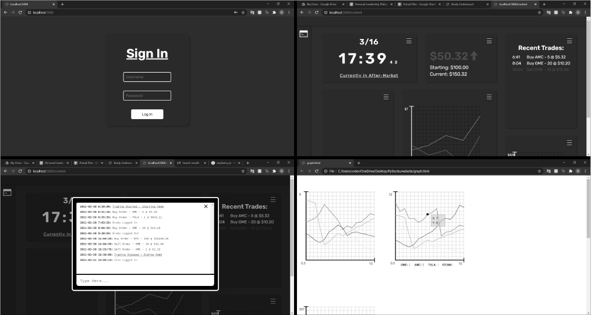

Python Trading Bot
This project will be written entirely in Python on the server for simplicity sake using Flask and Socket.io to send and recieve information. The actual bot will utilize the TD-Ameritrade API along with Python classes to manage and store trade information.
The server will likely be hosted on a Raspberry Pi 4 and port forward a website than can be accessed by any device in order to view and manage trades. There will be a sign in page to prevent anyone from turning off and on the bot and a console to quickly make vital changes if needed. This project will also feature a graphing program written by me in pure javascript to display stocks.
Socials: